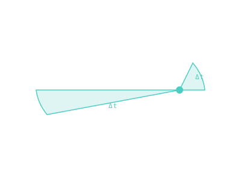

Kepler's Three Laws
Three observational rules that turned planetary motion into a closed-form science a century before Newton explained why.

101 · zoom in
Kepler did not have calculus. He did not have Newton's gravity. He did not have a computer. He had twenty years of his boss Tycho Brahe's painstaking eyeballed-with-a-quadrant observations of Mars, and he had patience. Out of that he wrote three rules that are still exactly correct today, four hundred years later.
Law one: orbits are ellipses, not circles. Heretical at the time. Law two: the line from a planet to the Sun sweeps out equal areas in equal times — which is a sneaky way of saying planets speed up when they're close to the Sun and slow down when they're far. Law three: the bigger the orbit, the longer the year, in a precise way (T² scales as a³).
Newton came along seventy years later and proved that all three laws fall out of one simple gravity equation. But Kepler got there first, with no theory — just by staring at numbers until they confessed. That's the kind of move you can still pull in modern science if you have the patience for it.
First law: planets orbit on ellipses with the Sun at one focus. Before Kepler, every model used circles — sometimes nested, sometimes offset, but always circular. Kepler used Tycho Brahe's twenty years of Mars observations and gave up: the data didn't fit circles, and nothing he could do made them. Ellipses fit on the first try.
Second law: the line from Sun to planet sweeps equal areas in equal times. This is angular-momentum conservation in disguise. Near perihelion the planet is close to the Sun, the line is short — so it has to swing fast to sweep the same area as a long, slow line near aphelion. It's why orbital speed isn't constant.
Third law: `T² ∝ a³`. The square of the orbital period is proportional to the cube of the semi-major axis. With Earth set to T = 1 year and a = 1 AU, you can read off any planet's period from its distance — or its distance from its period. Newton would later derive this from gravity; Kepler got there through pure pattern-matching on Brahe's data.
SEE IN THE APP
- /explore Period vs semi-major axis follows Kepler's third law for every planet